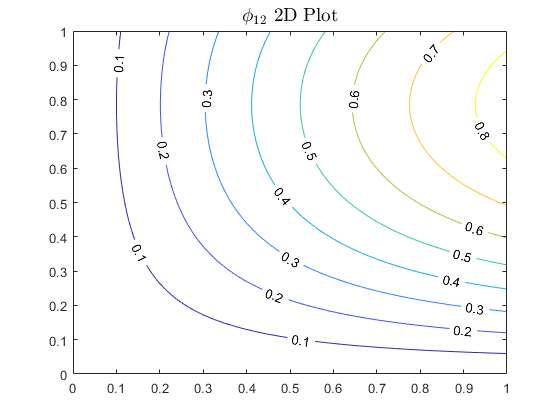
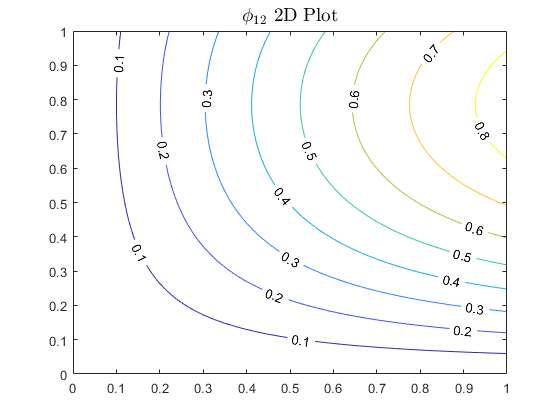

Advanced engineering mathematics HW.3
Programer: PO-HSUN WU Last edit date: 2021/12/17 16:50
Contents
#1(a)
clear;clc;close all [x, y] = meshgrid(0:0.01:1,0:0.01:1); len = size(x); for i = 1:len(1) for j = 1:len(2) f = @(m) (sinh((2*m-1)*pi*(1-y(i,j)))+sinh((2*m-1)*pi*y(i,j)))/sinh((2*m-1)*pi)*sin((2*m-1)*pi*x(i,j))/(2*m-1)^3; T(i,j) = (x(i,j)^2-x(i,j))/2 + 4/pi^3*limsum(f); end end figure() surf(x,y,T, 'edgecolor', 'none') title("$\frac{q_0}{2}(x^2-x)+\frac{4q_0}{\pi^3}\sum\limits^{\infty}_{m=1,3,5,...}\frac{1}{m^3}[\frac{\sinh{m\pi(1-y)}+\sinh{m\pi y}}{\sinh{m\pi}}]\sin{m\pi x}$ 3D Plot", "fontsize", 14, 'interpreter', 'latex') figure() contour(x,y,T,'ShowText','on') title("$\frac{q_0}{2}(x^2-x)+\frac{4q_0}{\pi^3}\sum\limits^{\infty}_{m=1,3,5,...}\frac{1}{m^3}[\frac{\sinh{m\pi(1-y)}+\sinh{m\pi y}}{\sinh{m\pi}}]\sin{m\pi x}$ 2D Plot", "fontsize", 14, 'interpreter', 'latex')
#1(b)
clear;clc;close all [x, y] = meshgrid(0:0.01:1,0:0.01:1); len = size(x); for i = 1:len(1) for j = 1:len(2) tamp = 0; f = @(n,m) sin((2*m-1)*pi*x(i,j))*sin((2*n-1)*pi*y(i,j))/((2*m-1)*(2*n-1)*(((2*m-1)*pi)^2+((2*n-1)*pi)^2)); for n = 1:100 for m = 1:100 tamp = tamp + f(n,m); end end T(i,j) = -16/pi^2*tamp; end end figure() surf(x,y,T, 'edgecolor', 'none') title("$\frac{-16q_0}{\pi^2}\sum\limits^{\infty}_{m=1,3,5,...}\sum\limits^{\infty}_{n=1,3,5,...}\frac{1}{mn[(m\pi)^2+(n\pi)^2]}\sin{m\pi x}\sin{n\pi y}$ 3D Plot", "fontsize", 14, "interpreter", "latex") figure() contour(x,y,T,'ShowText','on') title("$\frac{-16q_0}{\pi^2}\sum\limits^{\infty}_{m=1,3,5,...}\sum\limits^{\infty}_{n=1,3,5,...}\frac{1}{mn[(m\pi)^2+(n\pi)^2]}\sin{m\pi x}\sin{n\pi y}$ 2D Plot", "fontsize", 14, "interpreter", "latex")
#2(a)
clear;clc;close all [x, y] = meshgrid(0:0.01:1,0:0.01:1); len = size(x); for i = 1:len(1) for j = 1:len(2) phi_12 = sin(1*x).*sin(2*y); phi_21 = sin(2*x).*sin(1*y); phi_13 = sin(1*x).*sin(3*y); phi_31 = sin(3*x).*sin(1*y); end end figure() surf(x,y,phi_12, 'edgecolor', 'none') title("$\phi_{12}$ 3D Plot", "fontsize", 14, "interpreter", "latex") figure() surf(x,y,phi_21, 'edgecolor', 'none') title("$\phi_{21}$ 3D Plot", "fontsize", 14, "interpreter", "latex") figure() contour(x,y,phi_12,'ShowText','on') title("$\phi_{12}$ 2D Plot", "fontsize", 14, "interpreter", "latex") figure() contour(x,y,phi_21,'ShowText','on') title("$\phi_{21}$ 2D Plot", "fontsize", 14, "interpreter", "latex")
 
 #2(b)(c)(d)(e)
clear;clc;close all [x, y] = meshgrid(0:0.01:1,0:0.01:1); len = size(x); for i = 1:len(1) for j = 1:len(2) phi_12 = sin(1*x).*sin(2*y); phi_21 = sin(2*x).*sin(1*y); phi_13 = sin(1*x).*sin(3*y); phi_31 = sin(3*x).*sin(1*y); end end figure() surf(x,y,phi_12+phi_21, 'edgecolor', 'none') title("$\phi_{12}+\phi_{21}$ 3D Plot", "fontsize", 14, "interpreter", "latex") figure() surf(x,y,phi_13+phi_31, 'edgecolor', 'none') title("$\phi_{13}+\phi_{31}$ 3D Plot", "fontsize", 14, "interpreter", "latex") figure() surf(x,y,phi_13-phi_31, 'edgecolor', 'none') title("$\phi_{13}-\phi_{31}$ 3D Plot", "fontsize", 14, "interpreter", "latex") figure() surf(x,y,phi_13+phi_31/3, 'edgecolor', 'none') title("$\phi_{13}+\frac{1}{3}\phi_{31}$ 3D Plot", "fontsize", 14, "interpreter", "latex") figure() contour(x,y,phi_12+phi_21,'ShowText','on') title("$\phi_{12}+\phi_{21}$ 2D Plot", "fontsize", 14, "interpreter", "latex") figure() contour(x,y,phi_13+phi_31,'ShowText','on') title("$\phi_{13}+\phi_{31}$ 2D Plot", "fontsize", 14, "interpreter", "latex") figure() contour(x,y,phi_13-phi_31,'ShowText','on') title("$\phi_{13}-\phi_{31}$ 2D Plot", "fontsize", 14, "interpreter", "latex") figure() contour(x,y,phi_13+phi_31/3,'ShowText','on') title("$\phi_{13}+\frac{1}{3}\phi_{31}$ 2D Plot", "fontsize", 14, "interpreter", "latex")
#3
clear;clc;close all syms c1 x y(x) y = c1*x*(pi/2-x); I = int(2*x*y-y^2+diff(y,x)^2, x, 0, pi/2); c1_ = -10:0.01:10; I_ = double(subs(I, c1, c1_)); plot(c1_, I_) xlabel("c_1"); ylabel("I(y^*_A)") grid() [min_I, index] = min(I_); min_c1 = c1_(index); fprintf("When c1=%.2f, I(yA) have the minimum value is %.4f\n", min_c1, min_I)
When c1=-0.52, I(yA) have the minimum value is -0.2645
#5
clear;clc;close all y0 = 0:0.01:1; x1 = y0.*acosh(1./y0); figure() plot(x1,y0) xlabel("x_1"); ylabel("y_0") grid() A = pi*y0.^2.*(sinh(2*x1./y0)+2*x1./y0); figure() plot(x1,A) xlabel("x_1"); ylabel("A_min") grid()
function of limit summation
function sum = limsum(f) sum = 0; n = 1; for i = 1:100 error = f(n); sum = sum + error; n = n+1; end end